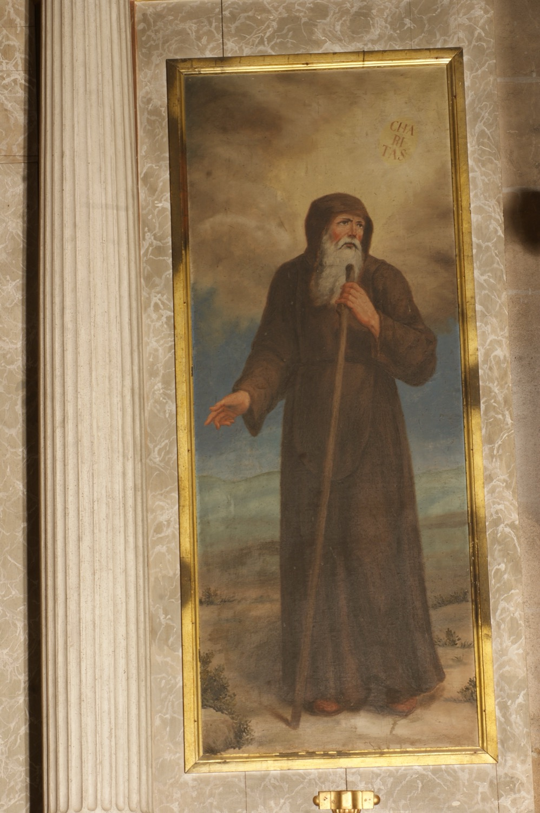

San Francisco de Paula (1416-1507) fue el fundador de la Orden de los Frailes Mínimos. Siendo muy pequeño padeció una enfermedad en los ojos y sus padres prometieron que, si sanaba, durante un año llevaría el hábito franciscano. En cumplimiento de esta promesa, ingresó a los doce años en un convento franciscano, iniciando así su preparación para la vida religiosa. Poco después de abandonar el convento, se retiró a una cueva para llevar vida eremítica. Poco a poco se le unieron seguidores y se formó a su alrededor una comunidad que daría lugar a la Orden de los Frailes Mínimos, cuyos miembros añaden a los tres votos tradicionales de pobreza, castidad y obediencia un cuarto voto de vida cuaresmal perpetua. San Francisco de Paula fue famoso en vida por los numerosos milagros, curaciones y profecías que se le atribuyeron.
Esta pintura representa a san Francisco de Paula como un anciano ermitaño de barba blanca, vestido con el hábito oscuro de los Mínimos y portando un bastón. En el cielo aparece escrita la palabra “Charitas”, lema de la orden y el símbolo más característico de san Francisco de Paula. El origen de este atributo se encuentra en una visión celestial que tuvo el santo, en la que unos ángeles descendieron del cielo con un disco en llamas que llevaba esta inscripción.